Total
Thank you for the purchase. We hope you love our theme!If you find any bugs with this theme get in touch with a clear description of the problem so we can fix it. However we do not support modifications such as: changing the appearance or functionality of the theme.
Theme FAQ Video Guides Request Suppport
Requirements
The following things are required to run this product:
- PHP 5+
- MySQL 5+
- GD Library
- Self-Hosted WordPress 3.7x
- Legal theme download
- Experience using WordPress functions
Recommended
This theme supports the following external plugins to provide functionality:
- Managed WP Hosting: WPEngine
- Forms: Contact Form 7
- Sidebar Management: WooSidebars
- SEO: WordPress SEO
Index
- Installation
- Sample Data (Dummy Content)
- Theme Options Panel
- Main Menu Setup
- Local Scroll Menu
- Building Pages + Visual Composer
- Adding Sliders To The Top of Pages
- Built-in Editor Styles
- Blog
- Portfolio, Staff & Testimonials
- Widgets & Sidebars
- Contact Form
- Font Icon Shortcode
- Custom Login Page
- Common Issues Debugged
Installation
You'll want to install this theme just like any other WordPress theme, either by uploading the main theme folder via FTP (unzipped) or the zipped file via the Wordpress theme upload section. Make sure you located the main theme folder from the downloaded zip file and that you are not uploading the entire zip with all the documentation, sample data, etc. Watch the
1. Uploading The Theme
a. FTP Method
- Log into your site via FTP
- Browse to your folder located at wp-content/themes
- Unzip the Total.zip folder and upload only the extracted Total folder to your server
- Log Into Wordpress and go to Appearance → Themes
- Find the theme and click to activate
{kind=link}
b. WordPress Method
- Log into ThemeForest and click on the "Downloads" tab
- Locate the Total theme and click the download button next to it
- Select the "Installable WordPress Theme" link from the dropdown.
- You should now have a file called Total.zip
- Log into WordPress
- Browse to Appearance →Themes
- Click to "add new" and then follow the instructions on the screen
- When it asks to select a file find the zipped Total.zip file you downloaded previously
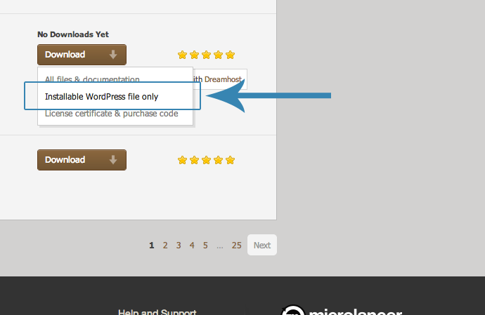
{kind=link}
3. Recommended Plugins
After you have finished installing the theme you will see a yellow notice stating you should install the recommended plugins, the theme will run without them but functionality will be impaired. We suggest you activate them to receive full benefits of the theme.
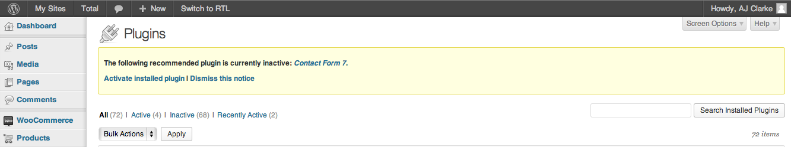{kind=link}
4. Activate & Save Permalinks - Important!
After installing and activating the recommended plugins go to your Settings → Permalink settings and hit the save button. To prevent any 404 errors on custom post type pages.
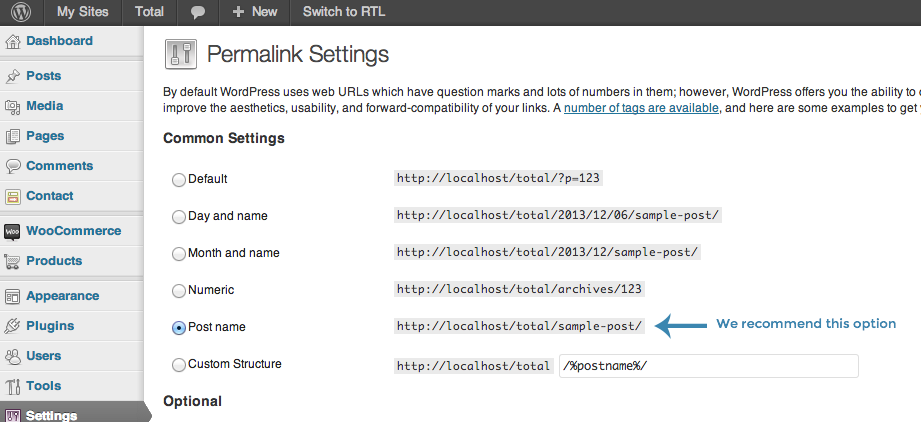{kind=link}
Sample Data
- Sample Data isn't automatically added to your site, for most people this wouldn't be beneficial, instead there are specific files included to import sample data.
- When you go to download your purchase click on Download->Main files.
- After this folder downloads, unzip it and locate the folder called “SampleData”.
- Within this folder you will find your sample data file(s). *
- Before uploading your Sample data you might want to install and activated the recommended plugins so that you don't get error notices upon uploading the sample data.
- To upload your WordPress sample data, log into your WP install and browse to Tools->Import and follow the instructions.
- After the import is complete you should have all the posts/pages from the demo with dummy images.
- There are certain things a WP import can not do, so after uploading sample data:
- Go to Appearance->Menu to set your menu locations.
- Go to Appearance->Widgets to add your widgets (widgets aren’t included in a WordPress export)
- Set your homepage at Settings->Reading using the “Home” page as a static page.
- Go to your Theme Options tab and setup your main options!
{kind=link}
{kind=link}
Sample Sliders
In our demo we mostly use the LayerSlider plugin (definately for the homepage we do) because we like it more then Slider Revolution. When you activate this plugin your sliders should automatically import so when you go to the LayerSlider settings page they should all be in there. You can also find an export file for both sliders inside the Sample Data folder mentioned above.
Theme Options
This theme includes an extensive theme options panel to customize your theme to your liking. You will find the link at the bottom of your main WordPress dashboard menu.
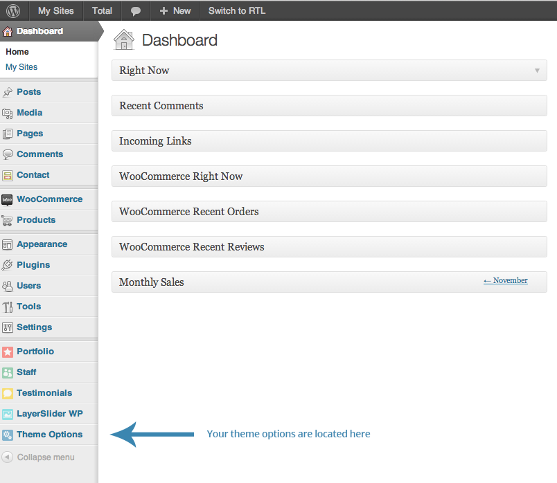{kind=link}
{kind=link}
{kind=link}
{kind=link}
{kind=link}
{kind=link}
{kind=link}
{kind=link}
{kind=link}
{kind=link}
{kind=link}
Building Pages + Visual Composer
This theme includes support for the Visual Composer plugin plus an additional plugin called "Visual Composer Extension" created specifically for our clients. The Visual Composer plugin and extension add a ton of drag and drop modules to your dashboard for quickly and easily building your site.
Make sure Plugins are Active
Make sure you have activated the Visual Composer plugin. This plugin is NOT built-into the theme (for good reasons) so it must be installed and activated.
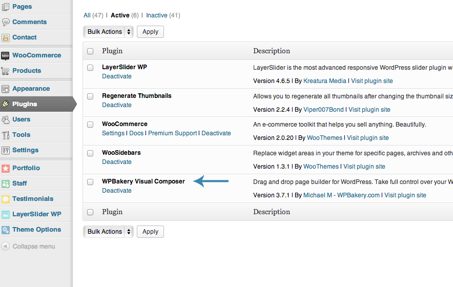{kind=link}
Visual Composer Settings
Go to Settings->Visual Composer to setup the plugin. The most important part is to enable the composer for the post types you want to use it on.
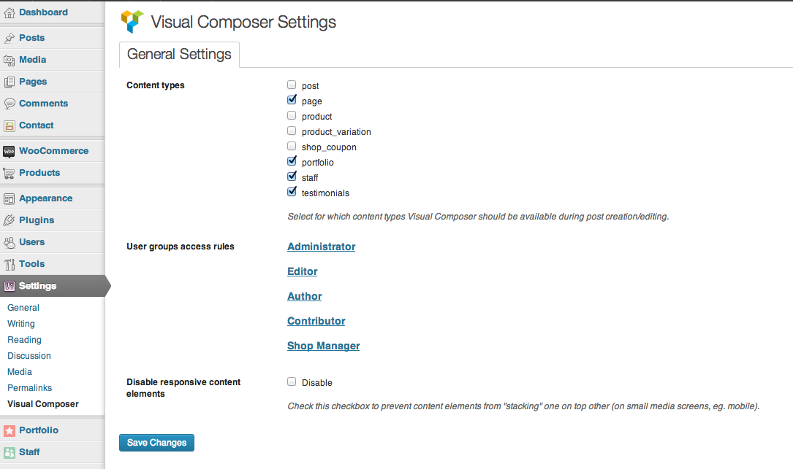{kind=link}
Using The Visual Composer
The Visual Composer is very easy and doesn't really need much explanation, have a look at the screenshots below for a quick guide
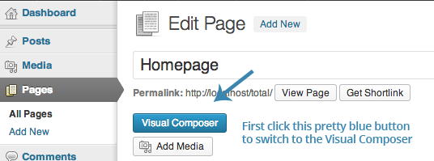 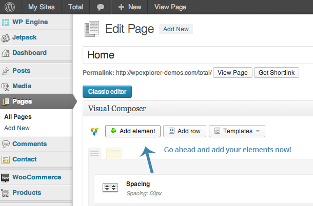 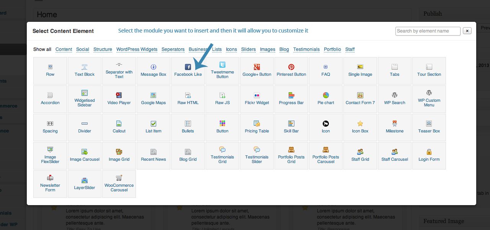 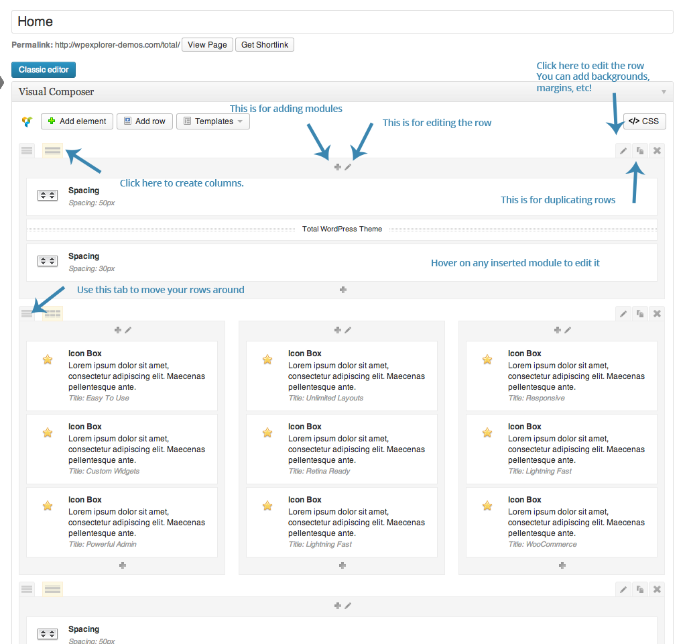{kind=link}
{kind=link}
{kind=link}
{kind=link}
Creating Full-Width Background Areas
The Visual Composer is very easy to use and pretty much the only thing that might confuse people is on how to create a full-background area. But don't worry it's simple!
Step 1: Set your page or post to have the full screen layout 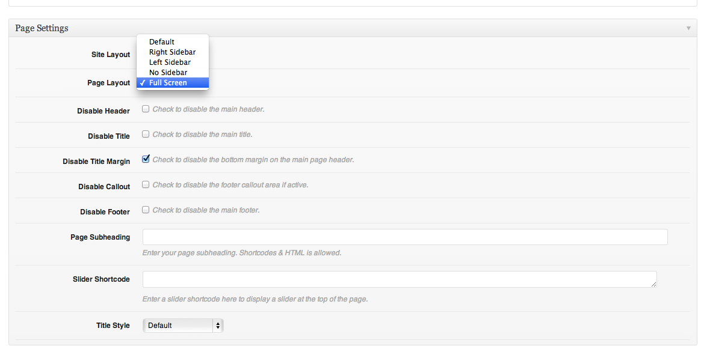 Step 2: Edit the Row you want to give a background to. 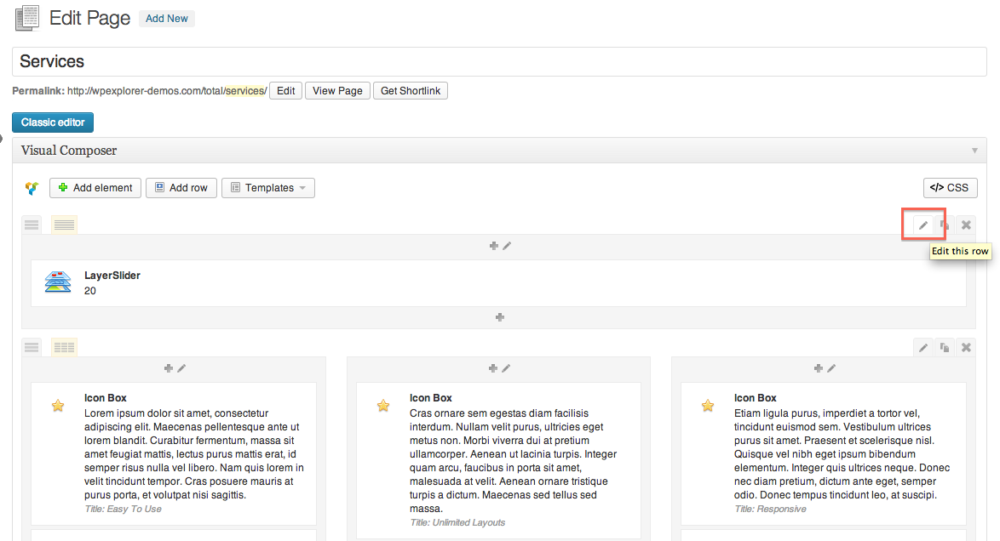 Center inner content.
{kind=link}
{kind=link}
Be sure to check the box to center your content if you want to add modules within your full-width background area row. 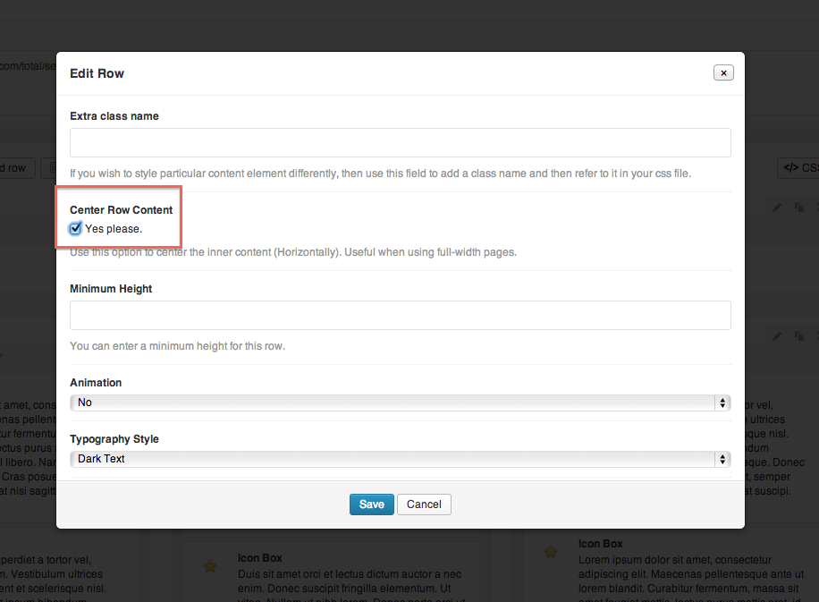
{kind=link}
Adding Sliders To The Top of Pages
This theme includes LayerSlider which you can use to quickly add amazing sliders to the top of your pages/posts.
Make sure LayerSlider is enabled
First make sure the LayerSlider plugin is active, it should have auto activated upon theme installation. If not you can find it in your downloadable zip in the plugins folder.
Importing Sliders
You can import the sliders from the demo, these are located in the full zip file you get on ThemeForest inside the "Dummy" folder.
Creating Sliders
Creating Sliders is pretty self-explanatory, everything in the dashboard is well labled, you shouldn't have any problem figuring it out
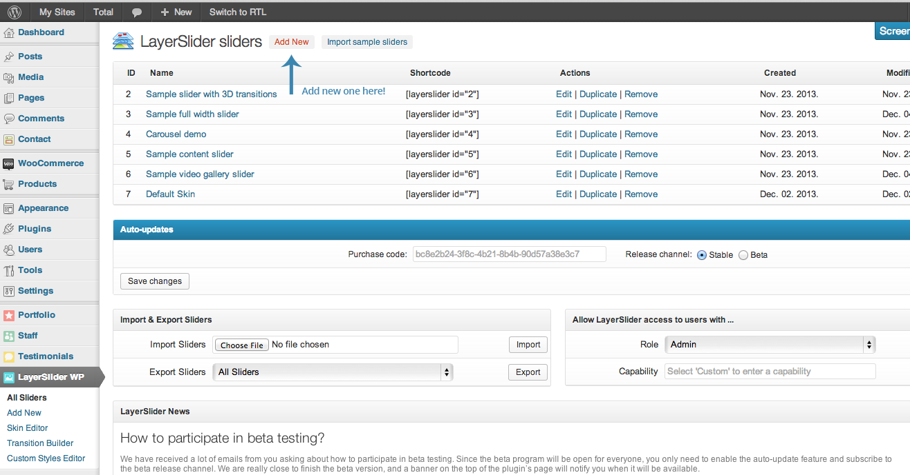{kind=link}
Adding Buttons To Sliders
You can easily add buttons to sliders using the built-in class.
Step 1: Add your text for the button as a span 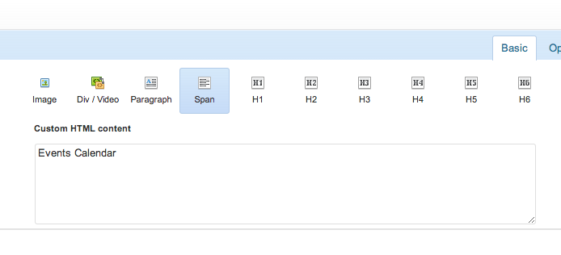 Step 3: Add the classname color-button in the attributes tab, followed by a color. You can find the list of colors and their styling below the screenshot. 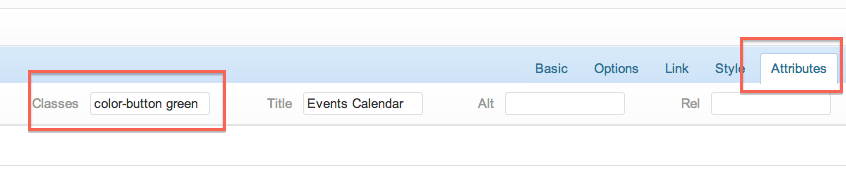
{kind=link}
{kind=link}
a.color-button.grey{ background-color: #bbb; }
a.color-button.black { background-color: #333; }
a.color-button.blue { background-color: #3f90bd; }
a.color-button.orange { background-color: #ff6040; }
a.color-button.orange { background-color: #ff6040; }
a.color-button.gold { background-color: #ffaa33; }
a.color-button.green { background-color: #87bf17; }
a.color-button.purple { background-color: #a73df2; }
a.color-button.teal { background-color: #00b3b3; }
a.color-button.pink { background-color: #f261c2; }
a.color-button.brown { background-color: #804b35; }
a.color-button.red { background-color: #F73936; }
a.color-button.rosy { background-color: #EA2487; }
a.color-button.white { background-color: #fff; color: #444; }
Adding Sliders To Pages
There are 2 ways you can add sliders to the top of your Pages.
Method 1: Add the slider shortcode inside a Visual Composer module at the top.
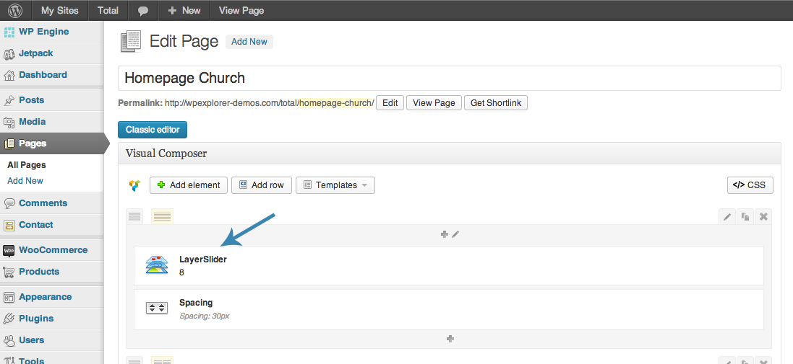{kind=link}
Method 2: Add the slider shortcode inside the meta option
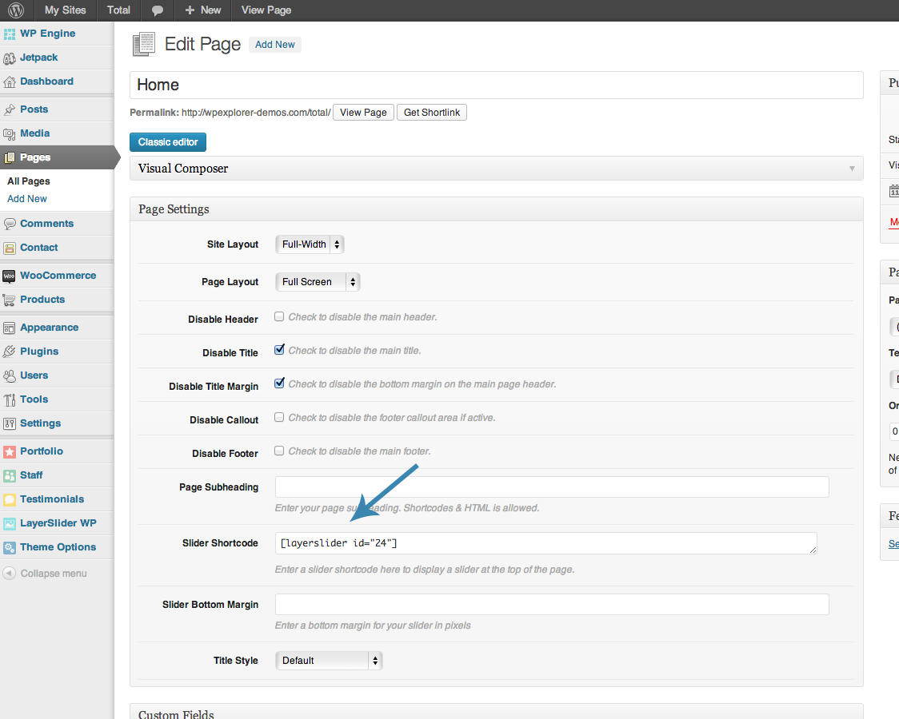{kind=link}
Editor Styles
In this theme we have enabled some additional styles in your post editor which we think are really useful - styles and font-sizes.
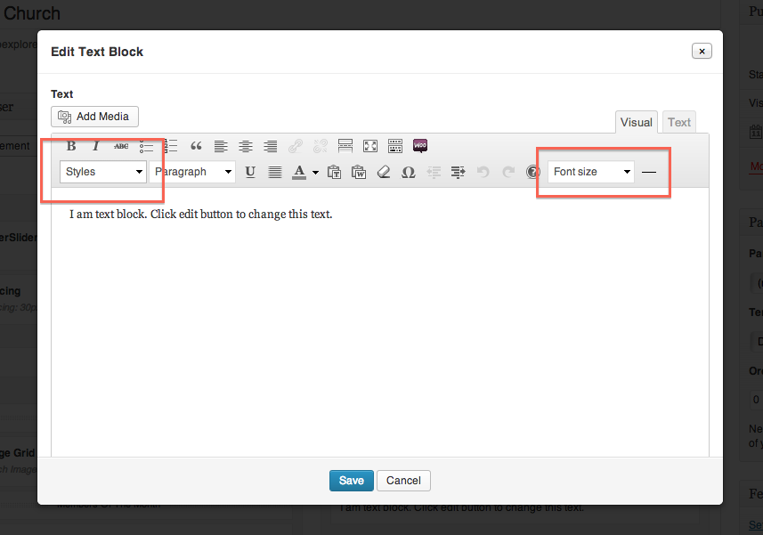{kind=link}
Blog
This theme includes support for a standard style blog.
Blog Template
If you are using the homepage as a static page you can create your blog page using the included Blog Template
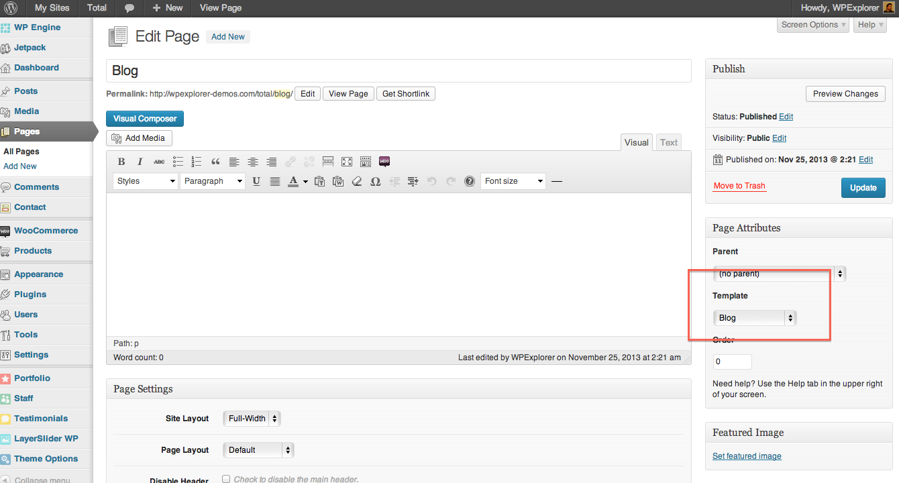{kind=link}
Post Slider
To create sliders for your posts simply use the Gallery post format and select your images with the built-in image gallery metabox
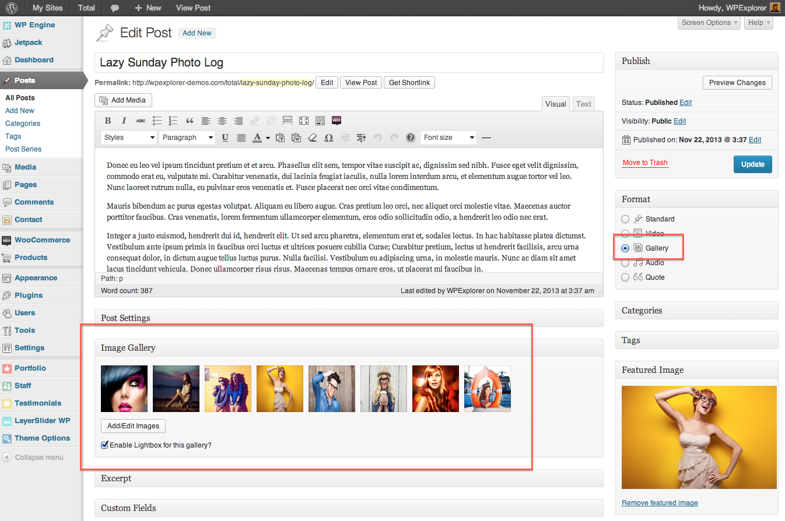{kind=link}
Portfolio, Staff & Testimonials
This theme includes built-in custom post types for portfolio, staff and testimonials. Why? Well, it makes it incredibly simply to manage these things when they are severate from your pages and/or standard posts.
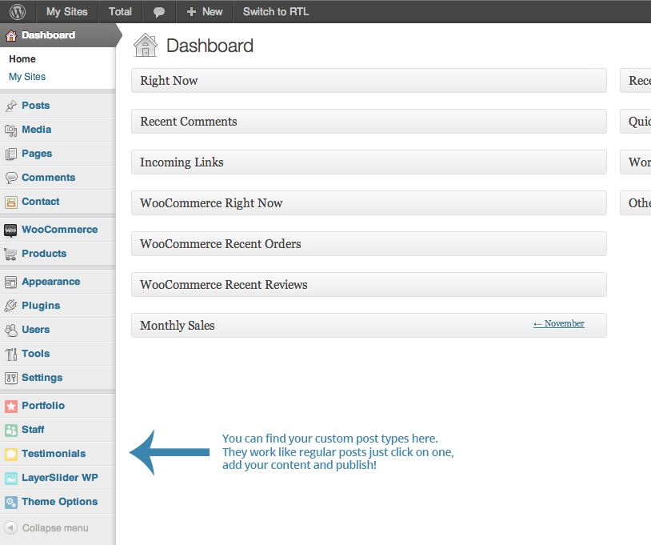{kind=link}
Custom Post Type Settings
There are many options built-in for these post types and they can also be completely renamed or even removed!

Adding Portfolio Items
You should be using the Visual Composer to create your Portfolio items, this will allow you to build each one exactly how you want it.
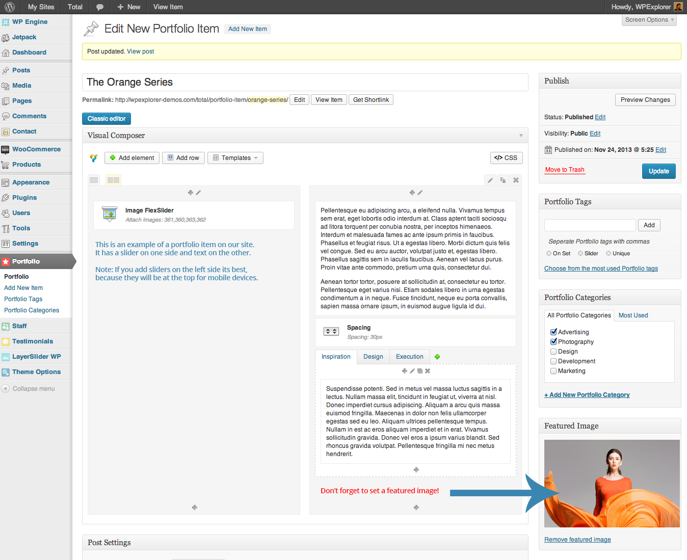{kind=link}
Feeling lazy?
Don't worry that's completely normal!
The total theme includes an option you can quickly enable to automatically display your featured images and featured portfolio videos on your posts if you rather use this method rather then building out each post with the composer.
{kind=link}
Displaying Portfolio Items
Use the Visual Composer to insert Portfolio items anywhere you want!
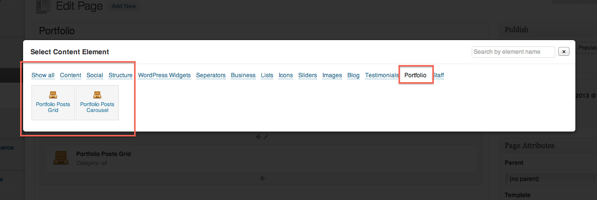{kind=link}
Adding Staff Members
You should be using the Visual Composer to create your Staff items, this will allow you to build each one exactly how you want it.
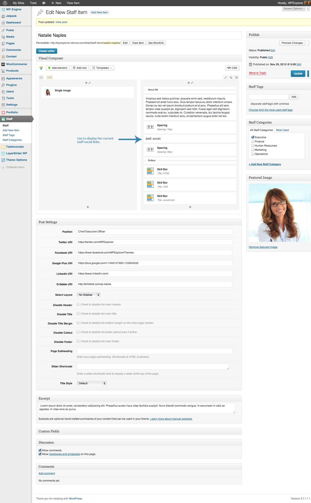{kind=link}
Displaying Staff Items
Use the Visual Composer to insert Staff items anywhere you want!
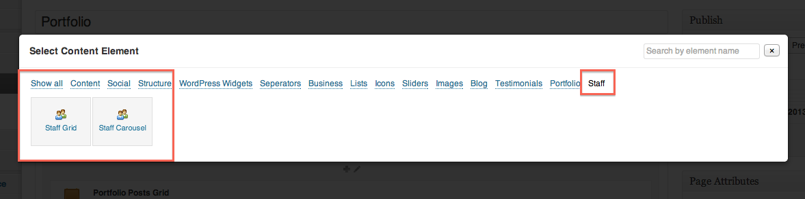{kind=link}
Adding Testimonials
Testimonials are pretty much added only to be used later by the Visual Composer (or linking to the archives). So you would add these like normal posts then use the Testimonials grid or slider to display them on the site.

Displaying Testimonials
Use the Visual Composer to insert Testimonials anywhere you want!
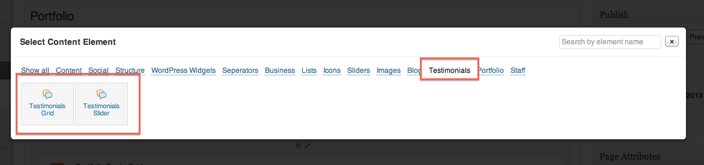{kind=link}
Tip: You can use the Testimonials grid select to show only "1 post per page" and set the order to random and voila, you now have a cool little random testimonial section!
Widgets & Sidebars
This theme has by default 89 Sidebar areas for use (but you can add unlimited by installing a 3rd party plugin, such as WooSidebars):
- Main Sidebar - Used for standard posts and as a fallback
- Pages Sidebar - Used for standard pages
- Portfolio Sidebar - Used for portfolio posts
- Staff Sidebar - Used for staff posts
- WooCommerce Sidebar - Used for WooCommerce products and shop pages
- Footer 1,2,3,4 - Used for the footer areas
{kind=link}
Contact Forms
Contact forms are not built into a theme (for many reasons) so we recommend using a 3rd party plugin for this. The free one we like is Contact Form 7 and the premium one we like is Gravity FormsBoth can be used to add forms anywhere on your site!
Font Awesome Shortcode
In version 1.32 I added a new font_awesome shortcode which can be used within the post editor to add icons inline (not with the Visual Composer) this is useful for adding them within the text module or on a classic post editor.
Sample Usage
Below is a sample usage for the shortcode, the ONLY parameter that is required is the "icon" parameter which is the name as defined on the FontAwesome website
[font_awesome icon="bolt" size="" margin_right="" margin_left="" margin_bottom="" margin_top="" color=""]
Custom Login Page
When you first activate your theme and go to log in to your site you may notice it looks completely different! That's because the Total theme includes built-in settings to redesign the login screen. You can tweak it or if you prefer disable it in the theme panel.
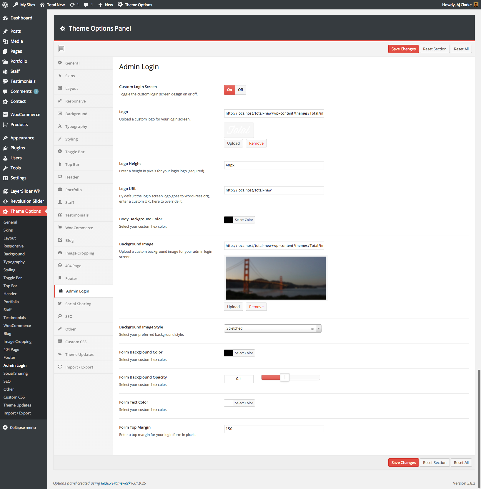{kind=link}
Common Issues
Bellow are some of the most common issues and the solution for fixing them. I also wrote a post a while back you might want to check out.
- Can't install theme via WordPress
If you are having trouble uploading and installing the theme via WordPress there are 2 main reasons this could be happening
- 1 - You are uploading the entire zip with sample data, plugins, docs..etc and not just the theme zip (Total.zip).
- 2 - You need to increase your server memory limit.
- Sample Data Errors
There are a few reasons you might be getting errors with the sample data. But usually if you just READ THE ERROR, you will know exactly why you got it
- Images don't download - This is most likely due to strict permissions on your server folders
- Contact form 7, WooSidebars & WooCommerce Errors - Did you enable the plugin before uploading the sample data?
- Portfolio, Staff or Testimonials go to the 404 Not Found Page
This is generally a permalink issue. Go to Settings->Permalinks and re-save your options to fix the problem. If it persists you might wnat to contact your host.